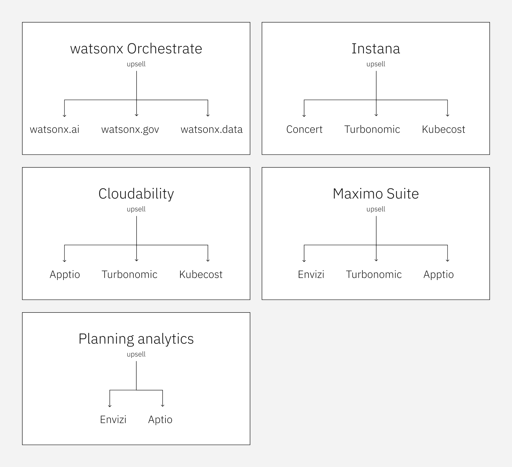
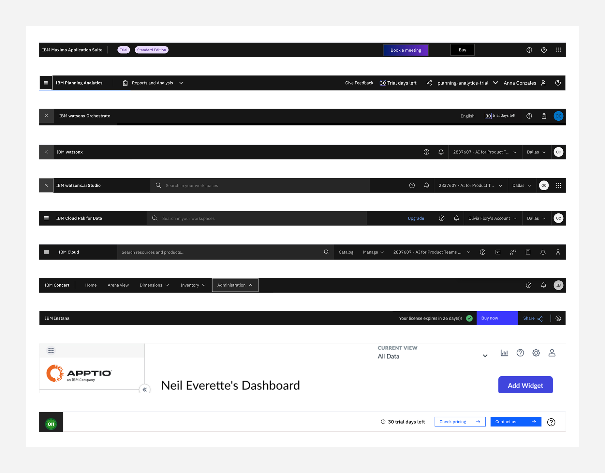
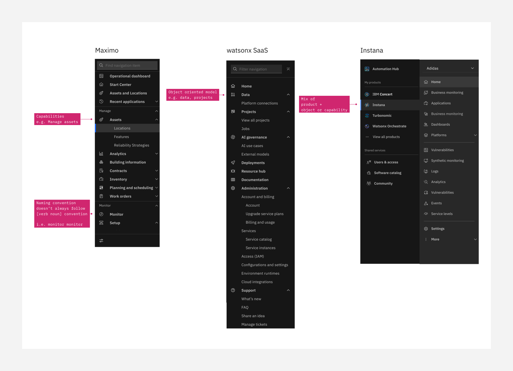
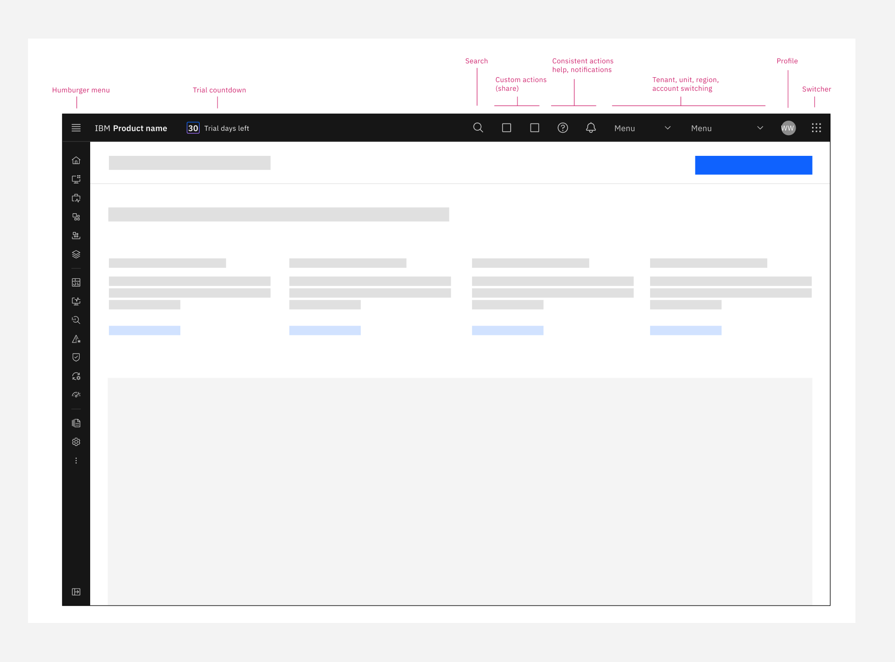
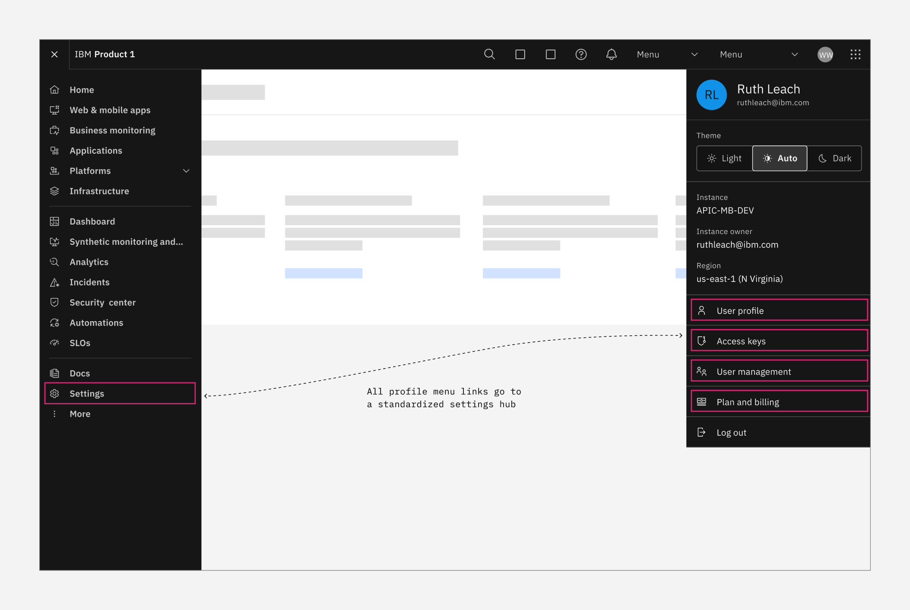
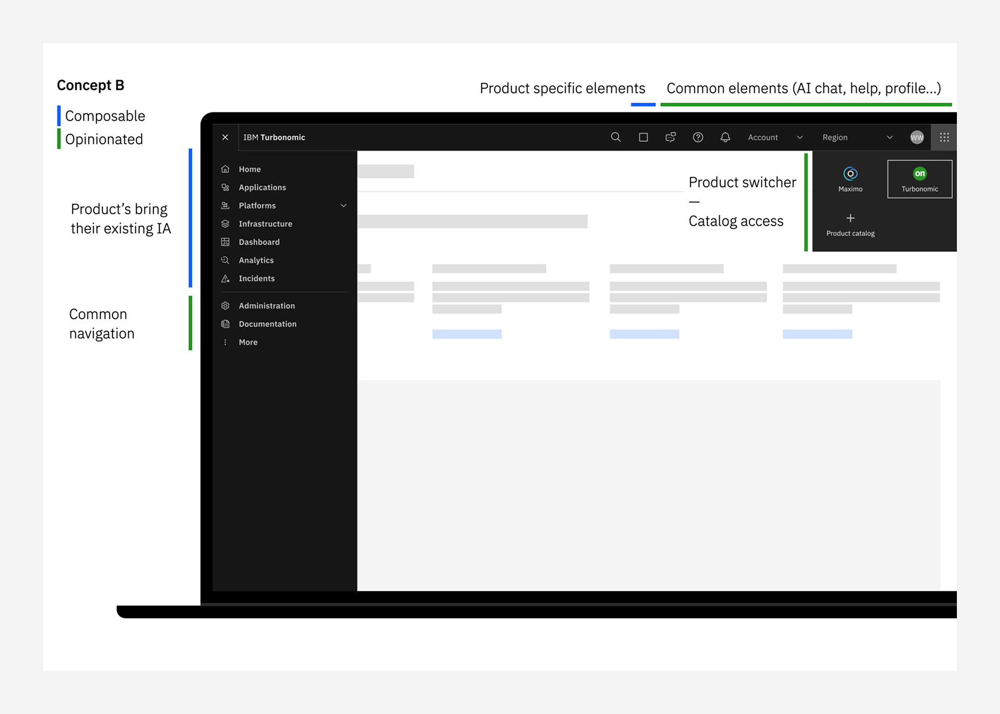

Creating IBM's global UI shell
Role: designer
January 2025 - Current
IBM has over 300 software products, yet in 2024, fewer than 1% of customers used more than one product. Customer research showed that this was partially because IBM products are not interoperable, user experiences between products are varied, and it was hard to access product trials. Recognizing the impact on revenue and missed upsell opportunities, IBM prioritized building a unified software platform in 2025.
The Carbon Design System team, which provides standardized components and guidelines for all software teams at IBM, was asked to create a global UI shell to support this platform vision. Our goal was to create components and guidelines that product teams could implement. We established a small ‘tiger team’ of 6, including 3 developers, a project manager, and 2 designers. My role as a UX designer involved researching existing UI shells in software products, iterating on designs for a unified UI shell with product switching, delivering specs to developers, and keeping product owners engaged.
We initially partnered with the Automation team, which had an urgent need for a new UI shell across six products in time for THINK, IBM’s annual conference. Olivia, the other designer, and I rapidly designed a top navigation rail, a product switcher menu, a tenant switcher, and a local left-hand navigation. Working with the developers on our team, we implemented these in Storybook to present to Automation and shared the new code library in React.
While this was a successful start to our project, the Automation team continued to request new features and components which I doubted would be beneficial to our larger goal of a global UI with product switching. I realized that we needed to be more firm in communicating our strategy and stance on component designs or we would risk being overly influenced by one team. To stay strategic, I led a session with our project manager, design principal, and Olivia to expand our engagement beyond Automation. Our new focus was on IBM’s 5 most valuable products and 9 additional upsell products.

I took ownership of the Data & AI portfolio (e.g., watsonx Orchestrate, AI, data, and government), while Olivia focused on Maximo and Turbonomic. We audited products via trials and test environments, screenshotting user flows and building a database of the components they were (or weren’t) using. With that foundation, I reached out to product owners and engineers of the Data & AI portfolio to understand the history behind their mixed UI shells, how they were implemented, and what roadmaps were already in motion. Many were initially resistant—they had competing priorities, disagreed with IBM’s platform strategy, or worried a new UI shell would be too hard to implement. But by showing how our delivery model was opinionated yet flexible, with composable components that could be implemented via API or React, I was usually able to turn those conversations into a constructive collaboration.

Databand dashboard before adopting the Carbon Design System.

As our understanding of the UI shell landscape deepened, we refined our designs. I defined required components for the top navigation bar and established guidelines for component order and breakpoints. and developed a new profile menu with a theme switcher and a structured approach to content and settings links.

I also developed a new profile menu with a theme switcher and a structured approach to content and settings links.

One of the most complex challenges was designing the product switcher. We explored multiple options, such as a nine-dot switcher on the right or a hamburger menu on the left. But ultimately we felt blocked by the fact that the concept of a platform was still ill-defined. Should users navigate within suites of related products or access any IBM product they own? What about admin users managing multiple teams and projects? What was feasible from an architectural standpoint? With no definitive answers, we tested our designs in real products to refine our approach. Currently our perspective is that a global product switcher between all products is not a wise or feasible move. Instead, we should better define suites of products and ensure they have a seamless navigation experience.

While we've made significant progress, this work is still evolving as we refine our solutions and align them with IBM’s broader platform strategy. This work has required advanced UX design skills, from designing flexible navigation patterns to testing real-world implementations, as well as strategic upwards management to align stakeholders across teams. By presenting prototypes, research, and technical constraints, I’ve helped IBM software leaders understand the challenges of creating a global UI shell that supports seamless product switching at scale.